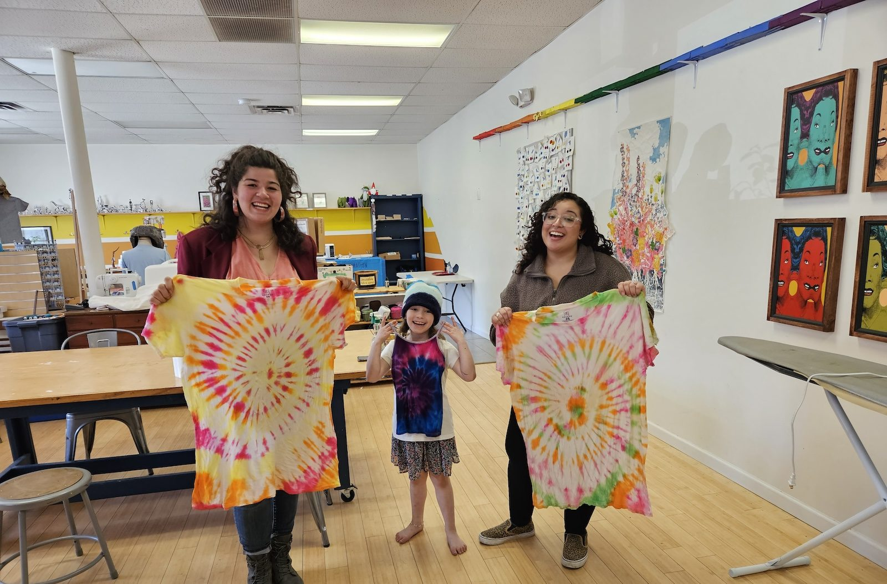
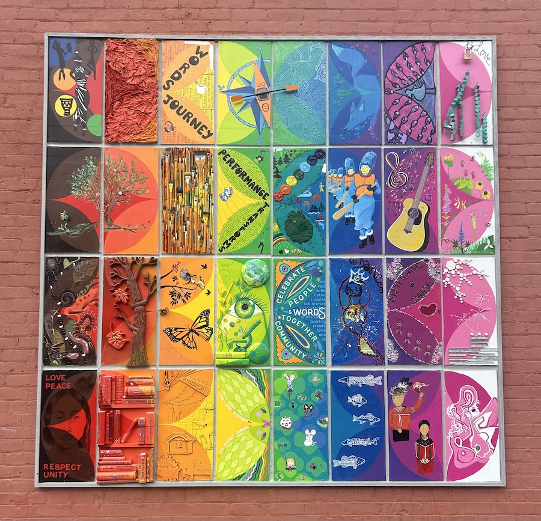

Past event
Adirondack Black Birders Week Celebration
- John Brown Farm State Historic Site, Lake Placid, NY
Explore the published program and regional reading resources.
People - Leadership - A more inclusive North Country
Stronger communities grow when we listen, learn, create and show up - together.
The archive film could not load. The still photograph remains available.
The Adirondack Diversity Initiative (ADI) builds belonging, expands leadership and increases cultural participation across the North Country.

Our programs
ADI supports people, ideas and spaces that make the North Country more inclusive, creative and connected.

Diverse
people.
Brighter
tomorrows.
Gatherings, learning and community. Explore one selected archive entry or check ADI's official website for current announcements.
- John Brown Farm State Historic Site, Lake Placid, NY
Explore the published program and regional reading resources.
A clearer starting point for learning, inclusive language and regional history. All resources lead to original public sources.
Try another word or return to all resources.
The Adirondack Diversity Initiative connects people and ideas around welcoming, belonging, leadership and cultural participation across the Adirondack region.
This proposed digital experience brings program information, events and resources into a consistent, accessible path.
Learn about ADI on its official website